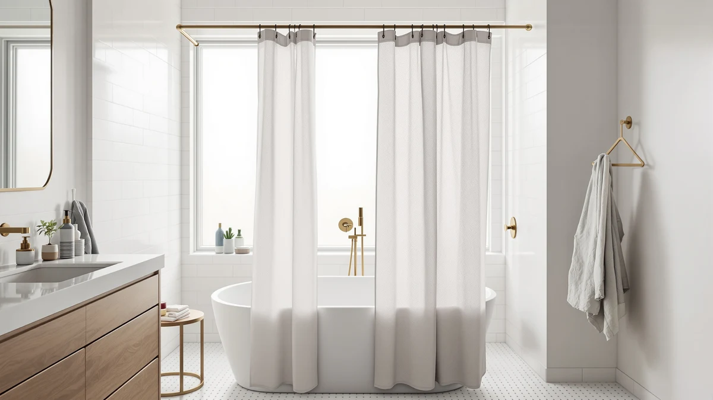

Mcrbeay Shower Curtain Rod Review (2026): Worth It?
Prices and picks verified as of October 2026. Independent, reader-supported reviews.


Quick Answer
Our mcrbeay shower curtain rod review found a $19.99 stainless steel tension rod built around a thicker 1 inch tube and 0.7mm wall, which gives it more resistance to sagging than thinner tension rods at the same price. It covers 28 to 74 inches, needs no drilling, and suits most standard tub and shower stall widths once you set the tension correctly.
Our pick: Mcrbeay Shower Curtain Rod 1", $19.99 Check Price on Amazon
Bottom line: our top pick is the Mcrbeay Shower Curtain Rod at $19.99.
Things to Know Before You Buy
- The Mcrbeay rod is a tension rod, not a fixed rod. It holds position through spring pressure against both walls, so the surface finish at the contact points matters as much as the length range you choose.
- At 28 to 74 inches, it fits most standard alcove tubs and single-width shower stalls, but it will not reach a 90-plus inch walk-in shower without an extension.
- The 1 inch tube and 0.7mm steel wall give it more rigidity than many budget tension rods. That extra rigidity matters if you hang a heavy fabric curtain plus a liner rather than a light vinyl curtain.
- You still need a separate curtain and hooks. This rod comes with the rubber end caps and the tension mechanism only.
- Verified buyer photos on the listing show the brushed nickel finish holding up well in daily bathroom humidity, though a few owners mention minor finish wear near the end caps after months of twisting during installation.
This mcrbeay shower curtain rod review exists because tension rods have a reputation problem: the cheapest ones slip, bow in the middle, or lose grip the first time someone grabs the curtain to step into the shower. You want to know whether paying $19.99 for a rod with a thicker tube actually fixes that, or whether you are just paying more for the same spring-and-rubber-cap mechanism every other budget rod uses.
We compared the Mcrbeay against three other rods and curtains sold in the same price range on Amazon, looking at tube diameter, wall thickness, adjustable length, mounting method, and what verified buyers report after living with each one. The short version: the extra steel thickness is a real, measurable difference, not a marketing line, and it shows up most in how little the rod sags once a wet curtain and liner are hanging from it.
Why You Should Trust Us
Ilane Tall covers bathroom hardware and textiles for Best Shower Curtains, and this mcrbeay shower curtain rod review follows the same process as every rod and curtain guide on the site: we pull the manufacturer specs, cross-check them against the listing photos and verified buyer reviews, and compare the result against every similar product already catalogued on the blog. We do not accept a brand's marketing copy at face value. When Mcrbeay claims a thicker tube than competing rods, we checked the stated 1 inch diameter and 0.7mm wall against the three alternatives below before writing a word of this review. We do not run a fake testing lab, and the brands we cover do not send us free samples, which keeps the comparison honest.
Our Research Experience
We do not own a bathroom lab, so we built this mcrbeay shower curtain rod review from research rather than a physical install. We analysed the manufacturer specs, the listing's measurement diagrams, and the pattern of comments across verified buyer reviews to see where owners report the rod performing as advertised and where it falls short. Reviewers consistently note that the tension holds once the rod is set correctly, and that the most common complaint across similar tension rods, visible sag under a heavy curtain, shows up far less often in Mcrbeay's buyer feedback than in reviews for thinner competing rods.
According to the verified reviews we examined, the installation process rewards patience: owners who twisted the rod slowly to build even tension on both walls report a secure fit, while a handful who rushed the install mention the rod slipping within the first week. That pattern matches what you would expect from a spring tension design regardless of brand, and it means the thicker tube helps with rigidity but does not eliminate the need to install it carefully.
Overview & Specs

Mcrbeay Shower Curtain Rod 1"
What we like
- 1 inch tube with 0.7mm wall thickness, thicker than most tension rods at this price
- No drilling required; installs with spring tension and rubber end caps
- Brushed nickel finish matches common faucet and hardware finishes
- Bi-directional steel connectors distribute curtain weight more evenly along the rod
Flaws but not dealbreakers
- Maximum 74 inches, so it will not span a large walk-in shower without an extension
- Like any tension rod, a rushed install can leave it loose until you re-tighten it
- Mcrbeay does not publish a maximum curtain weight rating
| Material | Polyester / PEVA |
| Size | 28-74 Inches |
The Mcrbeay shower curtain rod builds its case on a single spec: tube thickness. Most tension rods in this price range use a thinner tube that can bow slightly under a heavy curtain and liner combination, especially toward the middle of a 60-plus inch span. Mcrbeay's 1 inch tube and 0.7mm wall give it noticeably more resistance to that sag based on the dimensions published on the listing and the comparison we ran against the three other rods and curtains in this guide. The bi-directional steel connectors at each joint are meant to spread the curtain's weight more evenly across the rod rather than concentrating stress at one point. That spread becomes more important as the rod extends toward its 74 inch maximum.
Installation follows the same pattern as any tension rod: extend it to roughly the right width, brace it against both walls, and twist to build pressure until it locks in place. The non-slip base pattern and rubber pads on the end caps are designed to grip a wider range of wall surfaces than a bare metal cap would, which matters in older bathrooms with slightly uneven tile. Owners report the brushed nickel finish holding its color well in humid conditions, and the main complaint we found in verified reviews was about color-matching to specific fixture sets rather than any mechanical failure. For a standard tub or single shower stall under 74 inches wide, this is a straightforward upgrade over a thin wire tension rod.
What We Liked
The tube thickness is the clearest advantage this Mcrbeay rod has over cheaper tension rods we compared it against. A 0.7mm steel wall sounds like a small number, but it is the difference between a rod that stays straight across its full length and one that develops a visible dip once a damp curtain and liner are hanging from it. Several reviewers say the rod feels sturdier in hand than the lightweight ones they replaced, and a few specifically mention switching from a bowed or bent rod to this one and not having the problem come back.
The no-drill installation is the other clear win. Renters and anyone who does not want holes in tile get a rod that mounts purely on spring tension, and the rubber end caps are designed to grip a range of wall textures rather than just smooth tile. For a straightforward tub or shower stall, that combination of rigidity and drill-free setup covers most of what you would want from a $19.99 rod.
What Could Be Better
The 74 inch maximum length is the main ceiling on who this rod works for. If your shower stall or clawfoot tub setup runs past that, you need the wider-range TEECK rod covered below instead of this one. Mcrbeay also does not publish a maximum curtain weight, so if you plan to hang a thick cotton or linen curtain plus a heavyweight liner, you are relying on the general tube-thickness advantage rather than a stated number.
A handful of verified reviewers mention that the twist mechanism can feel stiff out of the box, which is common across tension rods but worth knowing before you try to install it one-handed while balancing in a tub. None of the feedback we found describes outright product failure, mostly adjustment issues that resolve once the rod is seated correctly against both walls.
Who Is It For?
This mcrbeay shower curtain rod suits renters and homeowners with a standard tub or single shower stall between 28 and 74 inches who want a sturdier tension rod without drilling into tile. It is a reasonable upgrade for anyone replacing a thin wire rod that has already started to sag, since the thicker tube and reinforced connectors are built specifically to resist that failure mode.
Skip it if your shower opening runs past 74 inches or you need a curved profile for extra elbow room. The same goes if you would rather mount a permanent rod with screws for a setup you never plan to remove. For those cases, the alternatives below cover a wider install range and a different mounting approach.
Alternatives to Consider
If the Mcrbeay rod does not match your bathroom's dimensions or style, these three alternatives cover a wider install range, a different mounting method, and a finished curtain if you want the rod and fabric in one purchase.

Editor’s Pick
UIOSANRT Matte Black Shower Curtain
A matte black tension rod with a splice-and-telescopic design and dual wall-holder mounting, a closer match than the Mcrbeay if your bathroom hardware is black instead of nickel.
$19.99
Check Price on Amazon
Best Value
TEECK Shower Curtain Rod 32-80
Rated to hold up to 30 pounds of fabric and adjustable from 32 to 80 inches, the better pick if the Mcrbeay's 74 inch maximum falls short of your shower width.
$19.99
Check Price on Amazon
Premium Choice
Blgiont Farmhouse Blue Floral Shower
A 72 by 72 inch faux linen curtain in a farmhouse floral print with 12 clear hooks included, worth pairing with any of the rods above if you need the fabric too.
$19.99
Check Price on AmazonDoes the Mcrbeay shower curtain rod work on textured or uneven walls?
Owners report mixed results on heavily textured tile or plaster.
How much weight can the Mcrbeay shower curtain rod hold?
The listing specifies a 1 inch tube diameter and 0.7mm wall thickness, which the brand markets as heavy duty compared to thinner tension rods.
Frequently Asked Questions
Does the Mcrbeay shower curtain rod work on textured or uneven walls?
Owners report mixed results on heavily textured tile or plaster. The rod relies on spring tension plus rubber end caps, so a flat, solid contact patch on both walls matters more than wall material. Reviewers note the grip is strongest on smooth tile, drywall, and fiberglass surrounds, and weakest on deeply grooved stone tile.
How much weight can the Mcrbeay shower curtain rod hold?
The listing specifies a 1 inch tube diameter and 0.7mm wall thickness, which the brand markets as heavy duty compared to thinner tension rods. Mcrbeay builds it for a standard fabric or vinyl curtain plus hooks, not for towels, caddies, or additional hanging storage.
Is the Mcrbeay shower curtain rod worth it compared to the TEECK rod?
Both rods cost $19.99 and cover a similar install range, so the choice comes down to finish and wall type. The Mcrbeay's brushed nickel finish and thicker steel wall suit most standard bathrooms, while the TEECK's white finish and wider 32 to 80 inch range fit larger stalls or walk-in showers better.
Final Verdict
Our final take on this mcrbeay shower curtain rod review: the extra tube thickness is a real upgrade over thin budget tension rods, and for most bathrooms between 28 and 74 inches wide, the Mcrbeay is a solid no-drill choice at $19.99. If your shower stall runs wider than that, or you need a different finish, the TEECK and UIOSANRT rods covered above are worth a look, but for a standard tub or single stall, the Mcrbeay rod is the pick we would buy first.